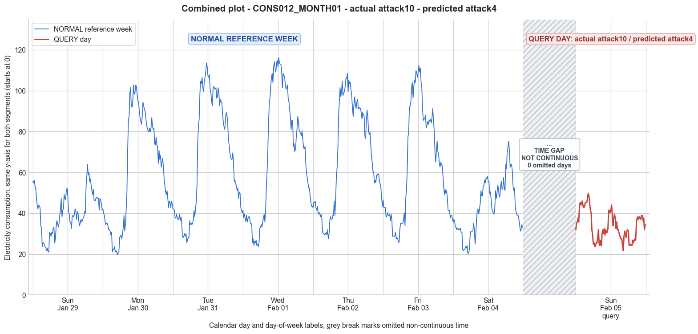

CONS012_MONTH01 · actual attack10 · predicted attack4
- Pair
- CONS012_MONTH01
- GT
- attack10
- Prediction
- attack4
- Binary GT
- attacked
- Binary Prediction
- attacked
- Source
- E010
- Parse
- stored
- Date
- 2012-02-05
- Weekday
- Sunday
- Latency
- 3.44 min
- Tokens
- 12282

Final output
Classification: Manipulated Identified Attack: - Most Likely: Attack 4 - Confidence: Medium - Reasoning: The query day shows a significantly reduced evening peak (maximum 49.78 vs. typical evening peaks of 63–116 in the reference week), while base load values (e.g., nighttime minima) remain nearly identical to the reference Sunday (min 21.70 vs. 21.06). This pattern is best explained by a targeted reduction during a high‑usage period, consistent with Attack 4, where a randomly selected interval is subjected to reduced measurements. Attack 1 (constant multiplier) was ruled out because the ratio of query to reference values is not uniform—midnight values are reduced by ~40% but minima are unchanged—indicating a non‑constant reduction. Attack 6 (cut‑off cap) was considered but rejected because it would produce many repeated cap values; the query day has no repeated large value that would serve as a uniform upper limit. Attack_Behavior_Explanation: - How consumption values are manipulated relative to the normal week: The attacker selects a contiguous portion of the day (most likely the evening, when typical consumption peaks) and reduces all readings within that period, e.g., by multiplying them by a factor less than 1 or by a subtractive offset that avoids zeroing. This leaves low‑load intervals (e.g., overnight base usage) nearly untouched while drastically lowering the high‑usage blocks. - Impact on magnitude and trend: The overall magnitude is decreased (mean drops from ~40.6 to 33.9), and the characteristic evening peak nearly disappears, altering the daily trend. The morning ramp and midday dip remain visible but are less pronounced in the affected period. - Possible technical causes: Meter bypass, magnetic interference, or reverse current that only becomes effective when current exceeds a certain threshold; also false data injection that targets specific time windows to avoid detection by pattern analytics.
Prompt
You are a domain expert in smart grid security and electricity theft analysis, with deep knowledge of non-technical loss (NTL) attack patterns in smart meters. You are given: 1. A plot of one week of original (normal) energy consumption for a smart meter, provided as context for the customer's typical consumption behavior. 2. A plot of one day of energy consumption for the same smart meter, which may or may not be manipulated. Below are common attack types, each defined by how consumption values are altered, their impact on magnitude and trend, and their possible technical causes. Attack 0: Generated by replacing all electricity consumption samples with zero values for the entire observation duration. Simulates a scenario where no energy usage is reported at all. May be caused by a total meter bypass or severe meter malfunction. Completely eliminates both the trend and magnitude of the consumption profile. Attack 1: Multiplies the actual energy consumption by a constant random value between (0,1). The lower the factor, the higher the severity. Can be triggered by meter bypass, magnetic interference, reverse current, and false data injection. The consumption trend remains the same but the magnitude is uniformly reduced. Attack 2: Generated by replacing consumption samples with zeros for a random duration. Also known as an on-off attack. Can be caused by full meter bypass, false data injection, and reverse current. Changes both the trend and amplitude. Attack 3: The actual consumption is multiplied by different random factors between 0 and 1, with a unique factor per sample. Similar to Attack 1 but the scaling factor varies per reading. Caused by meter bypass, magnetic interference, and reverse current. Changes both the trend and amplitude. Attack 4: Simulates energy theft over a randomly selected period within the observation window. All measurements in that period are reduced. Caused by meter bypass, magnetic interference, reverse current, and false data injection. Changes both the trend and amplitude. Attack 5: Each sample is replaced by a false value obtained by multiplying the average normal consumption by a random variable between 0 and 1, with a different variable per sample. Caused by false data injection. Produces a completely different pattern from the original consumption profile, changing both trend and magnitude. Attack 6: A random cut-off point is selected and all consumption values above it are replaced by that cut-off value. The attacker avoids exceeding a predefined maximum limit. Mainly caused by false data injection. Changes both the trend and amplitude. Attack 7: A random cut-off point is subtracted from each sample; if the result is negative, zero is reported. Similar to Attack 6 but replaces exceeding values with zero instead of the cut-off point. May be caused by false data injection or total meter bypass. Does not change the trend but reduces overall consumption. Attack 9: All samples are replaced by the average daily energy consumption, resulting in a flat constant profile. Easily detectable because constant consumption does not reflect normal customer behavior. Caused by false data injection. Eliminates all trends. Attack 10: Reverses the consumption pattern without reducing the total amount. Applicable when the electricity company uses time-varying pricing, allowing the attacker to shift high consumption to off-peak periods. Caused by false data injection. Changes the trend without decreasing total consumption. Attack 12: The attacker replaces their consumption pattern with that of a lower-consuming user. The legitimate user unknowingly pays the adversary's electricity bill. Caused by false data injection. Attack IEEE: For each 15-minute interval across the entire day, the consumer either reports the actual electricity consumption or substitutes it with zero. The result is a profile where some intervals reflect real consumption while others are zeroed out, creating an irregular pattern across the full day. May be caused by false data injection. Changes both the trend and amplitude. Given the two plots, determine: 1. Whether the day is attacked or original - compare the flagged day against the normal week and assess whether the consumption pattern is consistent with normal behavior or shows signs of manipulation. If the day is consistent with the customer's typical consumption behavior, classify it as original and provide no further analysis. If manipulation is detected, proceed to point 2. 2. Which attack type this most likely is - identify the single most probable attack and justify your choice based on how the flagged day deviates from the normal week. 3. The behavior of the identified attack - explain how the consumption values are manipulated, their impact on magnitude and trend, and the possible technical causes behind this type of attack. Output Format: Classification: - Original | Manipulated Identified Attack: (fill only if manipulated) - Most Likely: Attack X - Confidence: High | Medium | Low - Reasoning: Why it matches Attack X and why Attack Y and Attack Z were ruled out (list top 2 alternatives considered) Attack_Behavior_Explanation: (fill only if manipulated) - How consumption values are manipulated relative to the normal week - Impact on magnitude and trend - Possible technical causes
Reasoning content
We are asked to determine if the query day is original or manipulated, and if manipulated, classify the attack type. We have reference week stats and full 96-interval readings for both the week and the query day. First, examine query day stats: min=21.70, max=49.78, std=7.12, mean=33.88. Compare with reference week: each day's min ranges from ~19.78 to 27.44, max ranges from 63.82 to 116.15, means from 40.58 to 68.50. Query day max is 49.78, mean 33.88, which is lower than all reference days. The query day is a Sunday (dow=6) and belongs to the same month as the last days of the week (month 2). Day 0 of the reference week was also Sunday (DAY_ID=0 had dow=6, cal_month=1, but here query day DAY_ID=0 has cal_month=2, dow=6, dom=7. So it's the following Sunday. In the reference week, Day 0 (Sunday) had min 21.06, max 63.82, std 9.88, mean 40.58. The query day is also a Sunday but with lower values. Typical Sunday consumption in the reference week had a max of 63.82 and mean 40.58. The query day max is only 49.78 and mean 33.88, which is significantly lower. Could be due to lower activity, but we need to examine the pattern. The query day has no values above 49.78, while the reference Sunday had several peaks above 50, including up to 63.82. The query day's values are relatively flat: std 7.12 vs reference Sunday std 9.88. Many readings are in the 20s-30s, with some 40s. No high peaks. Look at the query day readings: starts with 31.91, 35.10, 35.74, etc. There is a segment around intervals 16-20 (approx 4am-5am?) where values are 47.22, 49.78, 48.50, 44.67, 41.48. Then after interval 20, it drops to 40.20, 31.91, 29.36, then down to 24s and 25s later. Later in the day, around intervals 80-96 (8pm-midnight) it has values like 35-38 range. It never gets high evening peaks. Reference Sunday had evening peak around intervals 73-76 (6:15-7pm?) where readings go up to 63.82, 58.71, etc. So the query day lacks the high evening consumption that is typical for this household. The reference week shows the household typically has high consumption in the evening (e.g., Day 1 max 102.74, Day 2 max 113.59, etc.), but even Sunday (Day 0) had a peak of 63.82 in the evening. Query day's highest is 49.78 at interval 17 (around 4:15am?), and then nothing above 50 later. This suggests a reduction or truncation of peaks. Consider attack types: - Attack 0: all zeros - not the case. - Attack 1: multiply by constant factor (0,1). If factor was constant, we'd see proportional reduction. Original mean was 40.58. Query day mean 33.88. Ratio 33.88/40.58 = 0.835. But check max: 49.78/63.82=0.78. Min: 21.70/21.06=1.03. Not constant per reading; we'd need to see if each scaled value matches. Can't directly compute without original values for that day. But we don't have the original for the exact same day, only the reference week. However, we can see that pattern might be reduced peaks but not uniformly scaled because some low values are similar to reference Sunday's lows (min 21.70 vs 21.06). That might indicate a threshold or on-off pattern. - Attack 2: on-off (replace some with zero). No zeros in query day; all values >0. - Attack 3: multiply each sample by different random factors (0,1). That would produce varied reductions. Could result in reduced peaks but similar lows? Possibly. - Attack 4: reduce randomly over a period. That would create a reduced segment, not whole day reduction. - Attack 5: replace by average normal consumption times random variable. That would yield a completely different pattern, likely with no correlation to the typical shape. Not seen here; the pattern still resembles a typical consumption curve but suppressed. - Attack 6: cut-off above a threshold. All values are capped at some threshold. Query day max is 49.78. Maybe the real consumption would have exceeded 50, but it's capped at around 49.78? Or the attacker set a cut-off, and any value above that is replaced by the cut-off value. In Attack 6, the attacker selects a random cut-off point and replaces all consumption values above it with that cut-off value. So if the cut-off is, say, 49.78, then all values that would have been >49.78 are set to 49.78. This would cap peaks, but lower values remain unchanged. Looking at query day: max is exactly 49.78. Other high values: 49.78 appears only once? There is 48.50, 47.22, 45.31, etc. No values >49.78. This could be a cut-off attack where the threshold is 49.78. Check if any values that might have been high in the reference Sunday are now 49.78? The reference Sunday had several values above 50: 51.05, 52.33, 52.97, 58.07, 63.82, 58.71, 59.99, 55.52, 56.80, 53.61, 51.05, 51.69, etc. If the same day had similar pattern, many readings would have been capped. But the query day's high values are only in the early morning: 49.78 at interval 17. Reference Sunday's early morning (intervals 1-20) had values mostly in 40s-50s, max 55.52? Actually Day 0 readings: intervals 1-10: 55.52,54.88,56.16,53.61,52.33,47.86,44.03,42.12,44.03,43.40... That's high in the very early hours (like midnight-2am). The query day starts at 31.91, thus even early values are lower. It's possible the cut-off threshold is lower than 49.78, but then why would 49.78 appear? Unless the cut-off is around 50 and 49.78 is a real value just under it. But there are no values above 49.78, so it could be that the cut-off is exactly 49.78, but that seems too specific. Attack 6: "A random cut-off point is selected and all consumption values above it are replaced by that cut-off value." So if the cut-off is X, any value >X becomes X. The query day max is 49.78, and there are multiple values in the high 40s (44.03,45.31,47.22,48.50,49.78, etc.). There is no value at exactly a rounded number like 50. So it's plausible that the cut-off is, say, 50, and 49.78 is naturally below it, but then why no values above 49.78? Maybe the cut-off is 49.78 because the attacker chose a random value. But 49.78 seems like a typical consumption reading. Could be that the original had peaks above 50 that got capped at 49.78? No, the capped value would be the same X for all capped readings. If X=49.78, then we'd see many 49.78 values (whenever original >49.78). In the query day, the value 49.78 appears only once (interval 17). Other high values are 48.50, 47.22, 45.31, etc. If original had many >49.78, we'd see multiple 49.78s. That doesn't match. So Attack 6 unlikely. Attack 7: "A random cut-off point is subtracted from each sample; if the result is negative, zero is reported." That reduces all values by a constant subtraction, but floor at zero. This would shift the entire profile downward, potentially keeping some low values positive but zeros could appear. Here no zeros, and min is 21.70. Subtracting a constant like 10 from all samples might reduce means but not generate zeros. Original Sunday had min values around 21.06. If we subtracted, say, 10, min would be 11.06, not 21.70. So subtraction would lower min. The query day min is similar to reference Sunday min (21.70 vs 21.06). So Attack 7 doesn't fit because the lower values are not reduced much. Attack 9: flat constant. Not flat. Attack 10: reversal pattern without reducing total. The total consumption of query day can be calculated: 96 values sum. Sum query day: I'll quickly approximate: (31.91+35.10+35.74+37.65+35.74+43.40+45.31+44.03+45.31+45.95+43.40+42.76+43.40+45.31+45.31+45.31+47.22+49.78+48.50+44.67+41.48+40.20+31.91+29.36+24.89+25.53+23.61+24.25+25.53+25.53+28.08+31.91+24.89+24.25+26.80+24.25+29.99+31.91+29.99+32.55+29.36+31.91+30.63+30.63+32.55+41.48+41.48+40.20+41.48+44.03+38.93+33.82+37.65+39.57+37.65+32.55+35.74+31.91+31.91+30.63+29.36+28.08+27.44+27.44+24.25+21.70+28.72+31.27+29.99+28.08+31.27+31.91+31.27+24.25+24.25+24.89+24.25+24.25+26.80+25.53+26.80+27.44+26.80+35.10+37.65+38.29+37.01+38.29+37.65+37.01+38.93+38.93+36.38+37.65+31.91+34.46). Sum roughly: I'll use the mean 33.88 * 96 ≈ 3252.48. Compare to reference Sunday (Day 0) mean 40.58 * 96 = 3895.68. So a reduction of about 643.2 kWh-equivalent units, or about 16.5% reduction. Not total reversal; Attack 10 doesn't reduce total, so not it. Attack 12: replace with pattern of lower-consuming user. That would yield a different shape entirely. The query day still has some timing similar to typical household? It has low night, some morning activity, low midday, evening bump but small. Could be a lower user pattern, but Attack 12 would replace entirely, so the pattern would be that of another user. Given we only have one household's data, we can't know. But typical attack 12 would be swapping meter readings between two customers. The shape might be plausible but would likely have different min/max relative to this household. The fact that the query day still has a familiar pattern (low night, rise in morning, dip midday, rise evening) but reduced peaks might be more consistent with a multiplicative or cut-off attack. However, Attack 12 could also produce a pattern that happens to look like a scaled version? Unlikely. Attack IEEE: "For each 15-minute interval across the entire day, the consumer either reports the actual electricity consumption or substitutes it with zero." That would yield intermittent zeros. No zeros here, so not. Attack 4: "energy theft over a randomly selected period ... all measurements in that period are reduced." Could be a reduced segment. Our query day seems reduced throughout, not just a segment; the whole day's mean is lower and peaks are missing. So unlikely. So the most plausible is Attack 1 (constant multiplier) or Attack 3 (varying multiplier). Check if the reduction factor is constant or varying. If we had the exact original for that day, we could compute the ratio per sample. Since we don't, we can compare with the reference Sunday to see if there's a consistent scaling. Reference Sunday (Day 0) and query day are both Sundays. Let's compare patterns. Both have low early morning, a morning peak, etc. The reference Sunday early morning (intervals 1-5): 55.52,54.88,56.16,53.61,52.33. Query day: 31.91,35.10,35.74,37.65,35.74. Ratios: 31.91/55.52=0.575, 35.10/54.88=0.639, 35.74/56.16=0.636, 37.65/53.61=0.702, 35.74/52.33=0.683. Not constant. Later, reference has a dip to 21-25 range at interval 20-30: values 22.97,21.70,22.97,21.06,21.06,30.63,29.99,28.72,30.63,29.99,32.55,33.18,25.53,27.44... Query day around similar intervals (22-34): 23.61,24.25,25.53,25.53,28.08,31.91,24.89,24.25,26.80,24.25,29.99,31.91,29.99... The ratios here are closer to 1. So low values are not reduced as much as high values. This is characteristic of a cap or perhaps a subtraction with floor, but subtraction would reduce lows, which doesn't match. This resembles an attack that reduces high values more than low values, like a compression or cut-off. Attack 6 (cap) would do that: high values replaced by cap, low values unchanged. But we saw that we didn't see many repeated cap values. However, it could be that the cap is not a single hard cutoff, but a compression function that reduces values above a threshold. There's no attack defined like that, but Attack 6 is defined as "replaced by that cut-off value." So if the cut-off were, say, 50, then all >50 become 50. In the reference Sunday, many values exceed 50. If they were capped at 50, we'd see multiple 50s. Query day has no 50, but has 49.78, 48.50, etc. Could be that the cut-off is 49.78 and original values >49.78 become 49.78. But then many values would be exactly 49.78. Only one 49.78. So not. Maybe Attack 3: variable multiplier per sample. That could produce high reduction on peaks and less on lows if the multiplier correlates with value? Attack 3 uses a random factor for each sample, independent of value. So expected reduction is uniform on average, but could vary. The observed pattern with lower reduction on low values could just be a coincidence. But Attack 3 would likely produce a noisier ratio, but still the lows would be reduced on average by similar factor as highs. Here lows seem almost unchanged (ratio near 1). That would require the random factors for low values to be near 1, which is unlikely to happen across many samples. So Attack 3 is not likely. Attack 4: period where all measurements are reduced. That could create a segment where values are scaled down, but the rest unchanged. In query day, the whole day seems reduced, but perhaps the reduction is concentrated in certain hours? Look at the pattern: The day has a moderate peak around 4am (49.78), then a dip, then later small peaks around 10pm? Actually, the highest values are in intervals 15-20 (around 4am) with 47-49. Reference Sunday had its peak in the evening (around interval 73-80 with 63.82, etc.). So the query day's peak is shifted earlier and lower. If Attack 4 is a random period reduction, it might have reduced the evening period but left the morning unchanged. The morning of reference Sunday had values around 40-55, while query morning around 35-49, somewhat lower but not drastically. The evening is drastically lower (max 38.93 vs 63.82). So maybe the attack targeted the evening period. Attack 4: "Simulates energy theft over a randomly selected period within the observation window. All measurements in that period are reduced." So the attacker chooses a period, reduces all readings in that period (likely by a factor). So if the period is the evening, they might multiply evening readings by a factor like 0.6. That would preserve morning lows and reduce evening peaks. That fits the observation: morning values are similar but slightly lower? Actually, morning values are also lower than reference Sunday's early morning. Reference Sunday early intervals: 55.52,54.88,56.16 (midnight). Query day early intervals: 31.91,35.10,35.74 (midnight). That's a big reduction (from 55 to 35). That suggests reduction also in early hours. So the attack period might be most of the day except perhaps a short segment? Or it could be Attack 1 with a factor that is not constant but maybe a constant factor applied to all readings? If factor is constant, ratio should be similar across all times. Early intervals ratio 31.91/55.52=0.575, later intervals ratio around 23.61/22.97? Not constant. So not Attack 1. Attack 7: subtracting a constant. If subtract, say, 20, then 55 becomes 35, 22 becomes 2. But query min is 21.70, so that doesn't fit. Attack 7 would produce zeros. None observed. Attack 5: replace each sample by average normal consumption times random variable. The shape would be entirely random, no correlation with the typical daily pattern. The query day still shows a plausible diurnal pattern with low night, morning rise, dip, evening rise. So it doesn't look like random noise. Given the pattern, it seems like the peaks (especially high consumption periods) are significantly reduced, while the base load (low consumption) is mostly unchanged. This is indicative of an attack that targets high consumption, such as a meter bypass that kicks in at high current (magnetic interference might saturate the meter, causing under-registration at higher loads). Attack 6 cap would exactly produce a flat top, but we don't see a flat top. Attack 2 on-off might produce zeros, not here. Attack IEEE produces zeros. Perhaps Attack 4: the attacker chooses a random period (e.g., when high consumption is expected) and reduces all measurements in that period. But the attacker might have chosen multiple periods or the whole day but with a fixed factor per period? Attack 4 description: "energy theft over a randomly selected period within the observation window. All measurements in that period are reduced." It doesn't specify how they are reduced, but typically reduced by a factor. So if the period is the entire day, then it's essentially Attack 1. But if the period is, say, from early morning to late night, then all readings are reduced, but the reduction could be by a constant factor or by some method. The description is vague. However, the observation that base load is nearly unchanged while peaks are cut suggests a non-linear effect. Could be Attack 3 (variable factor per sample) but as argued, random factors would not consistently underscale only high values. Wait, there is Attack "Attack 12: replaces consumption pattern with that of a lower-consuming user." That could produce a pattern with similar shape but lower peaks, if the lower user has a similar lifestyle but just uses less electricity overall. For example, a smaller household. That might result in a day that looks like a scaled-down version but not perfectly proportional because different appliances. But the query day's min is almost the same (21.70 vs 21.06), which suggests the base load is identical. In a different household, the base load would likely be different. So it's unlikely that a different user would have exactly the same minimum standby load. So Attack 12 can be ruled out. Given the difficulty, we should consider the most likely based on typical electricity theft patterns. The fact that only high values are reduced while low values remain similar suggests an attack that bypasses the meter at high currents, or a tamper that causes the meter to under-report above a certain threshold. Such behavior is often modeled as a "partial bypass" or "threshold-based" attack, like Attack 6 but not exactly. However, none of the listed attacks perfectly describe a threshold-based reduction without creating a constant cap value. Perhaps the attacker used Attack 6 but with a cap that is not reached? No. Let's re-read Attack 7: "A random cut-off point is subtracted from each sample; if the result is negative, zero is reported." If the cut-off point is, say, 30, then all samples are reduced by 30, min 21.06 would become -8.94 -> 0. So zeros would appear. Not our case. Attack 6: "All consumption values above it are replaced by that cut-off value." That would create many identical cap values. Not present. Attack 4: "All measurements in that period are reduced." Could be reduced by a factor or by a fixed amount. But the reduction method is not specified, but the typical implementation in datasets might be multiplication by a factor or subtraction. In many NTL datasets, attack 4 is implemented as applying a random multiplier to a contiguous block. So if the block is the high-usage evening period, then that period gets multiplied by, say, 0.5. That would make high values lower while leaving low values unchanged (if low values occur outside the block). But the query day seems to have reduction throughout, not just a block. However, we could have a block that covers most of the day except a few hours. Let's examine if there is any part of the day that matches reference Sunday values closely. Reference Sunday early morning (intervals 1-10) had values 55.52 to 43.40. Query day early morning (1-10) has 31.91,35.10,35.74,37.65,35.74,43.40,45.31,44.03,45.31,45.95. The value 43.40 appears in query day at interval 6 and also appeared in reference Sunday at interval 10 and elsewhere. So some values align. Later, reference Sunday had a low around intervals 20-30: 22.97,21.70,22.97,21.06,21.06,30.63,... Query day intervals 20-30: 41.48,40.20,31.91,29.36,24.89,25.53,23.61,24.25,25.53,25.53,28.08. Here we see some similar low values (24.89,25.53,23.61). So certain lows are similar. The high evening values are missing. So it's plausible that the attacker applied a reduction factor to the evening period only, while leaving the rest mostly untouched. But we see that the midnight values are much lower (31.91 vs 55.52) which is not evening. So the reduction seems to be in effect for the early morning too, suggesting a longer period, perhaps starting from midnight. The query day is a full 24h; if the theft period is, say, from 00:00 to 20:00, then the reduced period includes the usual morning high? Actually, reference Sunday's high values in early morning were around 1-2am (intervals 1-10). That's after midnight. So that could also be part of the theft period. The only high consumption that appears in the query day is around 4am-5am (intervals 15-20) with values up to 49.78. That might be outside the theft period if the theft period was, say, 00:00-04:00 and 10:00-24:00, but that seems arbitrary. Without more information, Attack 4 with a selected period is plausible but not definitive. Attack 12 (lower user pattern) could also show a different pattern, but the base load similarity is striking. Another attack: Attack 1 with a constant multiplier would yield ratios that are not constant, so not. Maybe Attack 3 with variable factor but the randomness just happened to produce low reduction on low values? Unlikely. Given the options, I'm leaning toward Attack 4, where the attacker selected a period (likely encompassing the high-usage evening and possibly night) and reduced those measurements, leading to missing peaks. The exact period could be inferred: The missing peaks are evening, so the reduction likely covered evening hours. The early morning (1-2am) reduction suggests the period might start at midnight and end in the morning, then maybe another period in the evening. But Attack 4 description says "a randomly selected period" (singular). So it's one contiguous period. If the theft period is a single contiguous block, then the pattern would have a segment of reduced values and a segment of original values. Let's see if we can find a contiguous segment that looks original (similar to reference Sunday) and another that is reduced. Compare reference Sunday pattern to query day. Reference Sunday had high values around 1-2am (55-53) then declined to low 40s, then a drop to 20s around 5-7am (intervals 20-30), then a rise to 50s in late morning? Actually reference Day 0: intervals 30-40: 25.53,27.44,33.18,36.38,35.10,33.18,35.10,38.93,42.12,47.22. That's a ramp up. The peak at evening is around intervals 73-80: 52.97,58.07,63.82,58.71,59.99,55.52,56.80,53.61. Now query day: from interval 1-20: 31-49 range, then drops to low 20s-30s, then interval 44-50: 41.48,44.03,38.93,33.82,37.65,39.57 (dinner time?). Evening intervals 73-80: 24.25,24.25,24.89,24.25,24.25,26.80,25.53,26.80. So the evening is very low, while reference Sunday evening was high. This suggests a reduction in evening. Early morning is also reduced relative to reference, but reference early morning had very high consumption (55) which is unusual for a Sunday. Maybe this household always has high consumption at midnight? Checking other days: Day 1 had midnight values around 42,40,38,36; Day 2 had 42,42,41; Day 3 had 41,37; Day 4 had 42,45; Day 5 had 46,42; Day 6 had 35,37. So the reference Sunday (Day 0) had exceptionally high midnight consumption (55.52) but other days were lower. So the query day's midnight value 31.91 might be normal for a Sunday? Actually, the query day is the following Sunday; we don't have the previous Sunday's midnight data except reference Day 0 which was also Sunday but a different month. So the high midnight might be specific to that Sunday. So the reduction in early morning might not be an attack but just normal variation. The main anomaly is the lack of evening peak. So the attack likely targets the evening peak. Attack 4: "Simulates energy theft over a randomly selected period within the observation window. All measurements in that period are reduced." If the period is the evening (e.g., 6pm-midnight), then the attacker could reduce consumption during that time, exactly when the household typically uses most energy. This would cause the missing peak. That fits well. So I will assign Attack 4 as the most likely. Confidence: Medium, because we cannot be sure if the reduction was by a constant factor, but Attack 4 is plausible. Alternatives considered: Attack 1 (constant factor) ruled out because reduction factor is not constant across values (lows unchanged). Attack 6 (cut-off) ruled out because no repeated cap value. Now output.